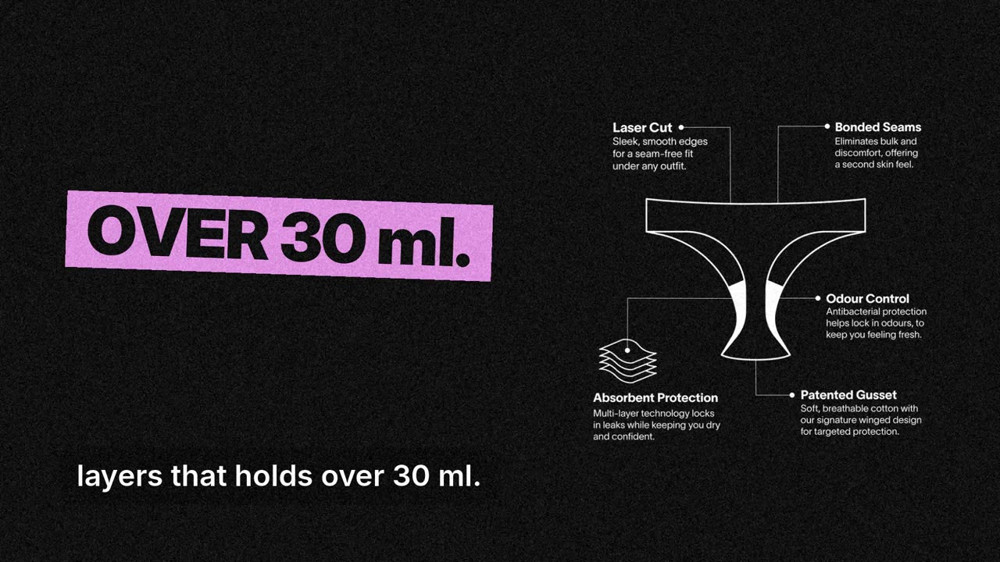

Each post below shows the film or image it carries, with the exact copy to go with it. Every post points to the guide, and the guide links back to every post.
YouTube isn't for ads here. It's where Google and AI assistants find and quote video answers, so the guide gets a second place to show up.
Bladder leaks when you exercise: what to wear when you train
A little leak when you run, skip or lift is common. It's called stress incontinence, and it isn't only something mums deal with. This video covers what to train in, how leakproof underwear should fit, and when to see a pelvic floor physio. The full guide, with answers to the questions people ask most: doubleundies.com.au/pages/bladder-leaks-when-you-exercise Double Undies have a winged gusset with two absorbent layers that holds over 30 ml. Made for light bladder leaks, sweat and periods. General information, not medical advice. If leaks are changing how you train, see a pelvic floor physiotherapist.
Captions file ready (English, Australia) · pinned comment links the guide
Same film in 9:16. Instagram captions can't hold a link, so the guide goes in your bio link.
Jumped. Leaked. Kept going anyway? 🙋♀️ A little leak when you run, skip or lift is really common. It's called stress incontinence, and it's not just a mum thing. Our winged gusset holds over 30 ml and stays put through jumps, squats and reps. Snug, not tight. Between sizes? Size up. If leaks are changing how you train, see a pelvic floor physio. The full guide is linked in our bio: doubleundies.com.au/pages/bladder-leaks-when-you-exercise
The "LEAKED." card. Point the bio link at the guide before this goes up.
Uploaded straight to Facebook so it plays in the feed, with the guide linked in the text and a question to get replies.
Ever had a little leak mid-skip, mid-squat or on a run? You're far from alone. It's called stress incontinence, and it happens to plenty of women who've never had a baby. We've put together a short guide on what to wear when you train, how leakproof undies should fit, and when it's worth seeing a pelvic floor physio: https://doubleundies.com.au/pages/bladder-leaks-when-you-exercise What do you wear for your workouts? Tell us in the comments 👇
16:9 film in the feed. The 9:16 cut can also go up as a Facebook Reel.
A still from the film and a plainer tone, for the business side of your audience.

Stress incontinence is common among women who exercise, and plenty of them have never had a baby. It is still something people rarely talk about at the gym. We've published a plain-language guide on bladder leaks during exercise. It covers why they happen, what to wear while you train, how leakproof underwear should fit, and when to see a pelvic floor physiotherapist. doubleundies.com.au/pages/bladder-leaks-when-you-exercise
AI assistants trust an answer they can find in more than one place. The guide is the hub, and each post backs it up.